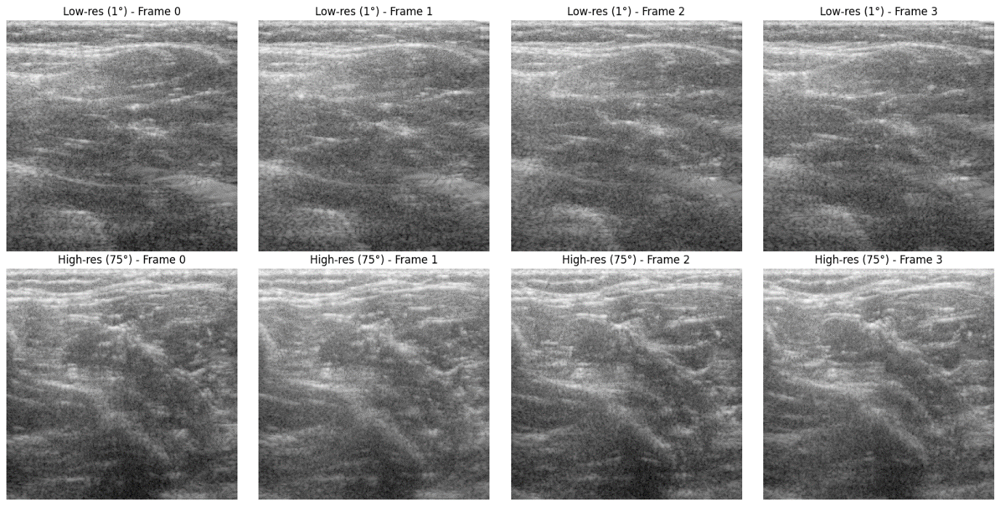

Bachelor of Science in Computer Science & Engineering
Daffodil International University, Dhaka, Bangladesh
(Spring 2022 - Fall 2025)
CGPA 3.88/4.00
Nazmul Huda Badhon – Deep Learning Researcher
ABOUT ME
badhon15-4772@diu.edu.bd
+880 1903-906230
Daffodil Smart City, Birulia, Savar, Dhaka-1216, Bangladesh
Hi there! I'm Nazmul Huda Badhon and I'm
an undergraduate final semester student in Computer Science and Engineering at Daffodil International University, Bangladesh, specializing in Machine Learning, Deep Learning, and Medical AI. His research explores AI-driven solutions for healthcare, medical imaging, and intelligent data analysis. He has authored 8+ peer-reviewed publications, including accepted works in Q1 and Q2 journals, data articles, and book chapters with publishers such as Taylor & Francis and Elsevier (Data in Brief). His contributions cover areas including energy demand prediction, medical imaging datasets, and systematic literature reviews on Large Language Models (LLMs) in healthcare. Beyond research, Badhon is passionate about teaching and mentoring, with a vision of pursuing a Research Assistantship or Teaching Assistantship to further develop his academic and research career. His strong foundation in algorithms, statistical modeling, and deep learning architectures supports his long-term goal of advancing AI for impactful, real-world applications.
Research Areas: Deep Learning, Machine Learning, Medical AI, Computer Vision, Medical Imaging
CV
EDUCATION
Exchange Program, Computer Engineering
Dongseo University, Busan, South Korea
Under the
Global Korea Scholarship (GKS)-2023 (Fall 2023)
GPA 3.94/4.50 (93.25% Marks in total.)
PUBLICATIONS/ PRESS
Total Publication of Nazmul Huda Badhon is 8+. All are top tier Journals, Book Publisher. Recent Key Publication is given below:
Journal
Research Article
Q1
Nazmul Huda Badhon, Imrus Salehin, Md Tomal Ahmed Sajib, Md Sakibul Hassan Rifat, SM Noman, Nazmun Nessa Moon, "TLCNN: Tabular data-based Lightweight Convolutional Neural Network for Electricity Energy Demand Prediction " on Current Research in Deep Learning, Global Energy Interconnection (In Press, Elsevier), 2025.

Journal
Review Article
Q2
Imrus Salehin, Md Tomal Ahmed Sajib, Nazmul Huda Badhon, Md Sakibul Hassan Rifat, Nazrul Amin, Nazmun Nessa Moon, Systematic Literature Review of LLM-Large Language Model in Medical: Digital Health, Technology and Applications " on Current Research in Deep Learning.” Engineering Reports (Accepted, Wiley), September 2025.
Journal
MINI REVIEW
Q2
Imrus Salehin, Nazmul Huda Badhon, Md Tomal Ahmed Sajib, Nazmun Nessa Moon, "Secure Medical AI: Federated Learning and Large Language Models for Medical Intelligence " on Current Research in Federated Learning. Engineering Reports (Submitted, Wiley), 2025.

Journal
Micro Article
Q2
Md Tomal Ahmed Sajib, Nazmul Huda Badhon, Imrus Salehin, Md Sakibul Hassan Rifat, Faysal Ahmed, Nazmun Nessa Moon, "A comparative deep learning methodology for plant insect image classification: assessment of CNN architectures and augmentation techniques." MethodsX (Under Review, Elsevier), 2025
Journal
Data Article
Q3
Imrus Salehin, Nazmul Huda Badhon, Md Tomal Ahmed Sajib, Mohd Saifuzzaman, Nazmun Nessa Moon (2025), “IQ-UltraRecon: Demodulated IQ ultrasound dataset of human hand and arm tissue for deep learning-based reconstruction.” Data in Brief (Accepted, Elsevier), August 2025.
Journal
Data Article
Q3

Imrus Salehin, Nazmul Huda Badhon, Md Tomal Ahmed Sajib, Nazmun Nessa Moon, "DeepUS-ReconSeg: A Multi-Angle Paired B-Mode Ultrasound Dataset for Medical Imaging Reconstruction and Segmentation." on Current Research in Deep Learning, Data in Brief (In Press, Elsevier), 2025.
Journal
Data Article
Q3
Imrus Salehin, Mahbubur Rahman Khan, Ummya Habiba, Nazmul Huda Badhon, Nazmun Nessa Moon (2024), "BAU-Insectv2: An Agricultural Plant Insect Dataset for Deep Learning and Biomedical Image Analysis" on Current Research in Deep Learning. Data in Brief (Accepted, Elsevier), January 2024.
Book Chapter
Nazmul Huda Badhon, Imrus Salehin, Md. Tomal Ahmed Sajib, Md. Sakibul Hassan Rifat, Nazmun Nessa Moon, "Predicting Peak Energy Demand Using Machine Learning Techniques for Efficient Electricity Supply Management." Engineering Applications of AI for Demand Forecasting (In Press, Taylor & Francis), 2024.
RESEARCH PROJECTS
Ultrasound
Segmentation
Hybrid Model
Classification
Breast Cancer: Segmentation-Guided Hybrid Classification
Datasets: BUSI with GT (segmentation) & BUSI_Corrected (classification)
A two-stage pipeline on breast ultrasound: (1) train U-Net on BUSI-with-GT to obtain lesion masks, then segment BUSI_Corrected images; (2) merge classes (Normal, Benign, Malignant) and train a hybrid classifier that fuses features from strong backbones (e.g., VGG16/MobileNetV2 plus MLP head). We report Accuracy/Loss curves, ROC for all classes, confusion matrix, and a full metrics table.
Computer Vision
Transfer Learning
Ablation Study
Lung–Colon Histopathology: Image Enhancement & Transfer Learning
Dataset: Lung–Colon Histopathology Images
This project applied sequential image processing techniques to enhance round nuclei in lung–colon histopathological images, followed by evaluation using MSE, RMSE, SSIM, and PSNR metrics. Five transfer learning models (ResNet50, DenseNet121, EfficientNet-B0, MobileNetV3, ViT-B/16) were explored, with the best model identified by accuracy and F1-score. An ablation study examined the impact of preprocessing.
Computer Vision
Vision Transformer
Image Processing
Image Preprocessing & Quality Analysis with Vision Transformer
Dataset: Medical Image Preprocessing Experiments
This project applied sequential preprocessing and quality enhancement steps to medical images, followed by classification using a Vision Transformer (ViT). Performance evaluation achieved 87% testing accuracy, demonstrating the effectiveness of preprocessing in improving transformer-based models. The workflow included image quality analysis, training curves visualization, and evaluation metrics summarization.
WORK EXPERIENCE
Research Assistant, Health Informatics Research Lab (March 2025 to Present)
- Collaborating in Computer Vision Projects, Especially in the area of Medical Imaging.
- The task is to Produce High-quality Q1 Journals.
Trainer, Multidisciplinary Action Lab, Dept of Computer Science and Engineering, DIU (February 2024 to Present)
- Collaborating in Computer Vision Projects, Especially in the area of Medical Imaging.
- The task is to Produce High-quality Q1 Journals.
ACHIEVEMENT & ECA
Scholarship
Global Korea Scholarship (GKS) 2023
Achieved GKS scholarship 2023 funded by the Government of Republic of Korea and studied one semister on-site in South Korea under Semester Exchange Program.
Receiving Year: Fall 2023 — Dongseo University

Award
Research Award for Scholarly Publication in Reputed Indexed Journal
Recognized for scholarly publications in reputed indexed journals by the Division of Research and Department.
Receiving Date: 20 May 2025
Bootcamp
Top Performer — CV & DL for Medical Data Analysis
Received token of appreciation for top performance in Computer Vision & Medical Image Analysis Bootcamp.
Receiving Date: 30 July 2025
SERVICES
- Peer Reviewer for Digital Health